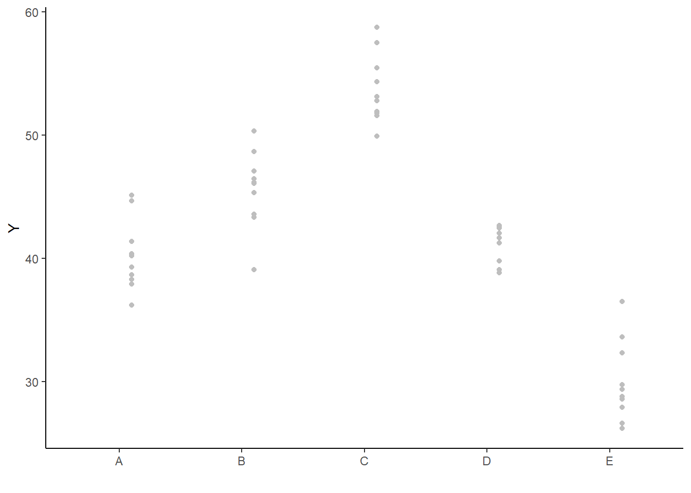

![]()
anova_tableNA df MS F-ratio
NA Factor A "a-1" "MS A" "(MS A)/(MS res)"
NA Residual "(n-1)a" "MS res" ""This tutorial will focus on the use of Bayesian estimation to fit simple linear regression models …
Software, Statistics, Stan
This tutorial will focus on the use of Bayesian estimation to fit simple linear regression models. BUGS (Bayesian inference Using Gibbs Sampling) is an algorithm and supporting language (resembling R) dedicated to performing the Gibbs sampling implementation of Markov Chain Monte Carlo (MCMC) method. Dialects of the BUGS language are implemented within three main projects:
OpenBUGS - written in component pascal.
JAGS - (Just Another Gibbs Sampler) - written in C++.
Stan - a dedicated Bayesian modelling framework written in C++ and implementing Hamiltonian MCMC samplers.
Whilst the above programs can be used stand-alone, they do offer the rich data pre-processing and graphical capabilities of R, and thus, they are best accessed from within R itself. As such there are multiple packages devoted to interfacing with the various software implementations:
R2OpenBUGS - interfaces with OpenBUGS
R2jags - interfaces with JAGS
rstan - interfaces with Stan
This tutorial will demonstrate how to fit models in Stan (Gelman, Lee, and Guo (2015)) using the package rstan (Stan Development Team (2018)) as interface, which also requires to load some other packages.
Single factor Analysis of Variance (ANOVA), also known as single factor classification, is used to investigate the effect of a single factor comprising two or more groups (treatment levels) from a completely randomised design. Completely randomised refers to the absence of restrictions on the random allocation of experimental or sampling units to factor levels.
For example, consider a situation in which three types of treatments (A, B and C) are applied to replicate sampling units across the sampling domain. Importantly, the treatments are applied at the scale of the sampling units and the treatments applied to each sampling unit do not extend to any other neighbouring sampling units. Another possible situation is where the scale of a treatment is far larger than that of a sampling unit. This design features two treatments, each replicated three times. Note that additional sampling units within each Site (the scale at which the treatment occurs) would NOT constitute additional replication. Rather, these would be sub-replicates. That is, they would be replicates of the Sites, not the treatments (since the treatments occur at the level of whole sites). In order to genuinely increase the number of replicates, it is necessary to have more Sites. The random allocation of sampling units within the sampling domain (such as population) is appropriate provided either the underlying response is reasonably homogenous throughout the domain, or else, there is a large number of sampling units. If the conditions are relatively hetrogenous, then the exact location of the sampling units is likely to be highly influential and may mask any detectable effects of treatments.
From a frequentist perspective, fixed factors are factors whose levels represent the specific populations of interest. For example, a factor that comprises “high”, “medium” and “low” temperature treatments is a fixed factor - we are only interested in comparing those three populations. Conclusions about the effects of a fixed factor are restricted to the specific treatment levels investigated and for any subsequent experiments to be comparable, the same specific treatments of the factor would need to be used. By contrast, random factors are factors whose levels are randomly chosen from all the possible levels of populations and are used as random representatives of the populations. For example, five random temperature treatments could be used to represent a full spectrum of temperature treatments. In this case, conclusions are extrapolated to all the possible treatment (temperature) levels and for subsequent experiments, a new random set of treatments of the factor would be selected.
Other common examples of random factors include sites and subjects - factors for which we are attempting to generalise over. Furthermore, the nature of random factors means that we have no indication of how a new level of that factor (such as another subject or site) are likely to respond and thus it is not possible to predict new observations from random factors. These differences between fixed and random factors are reflected in the way their respective null hypotheses are formulated and interpreted. Whilst fixed factors contrast the effects of the different levels of the factor, random factors are modelled as the amount of additional variability they introduce. Random factors are modelled with a mean of \(0\) and their variance is estimated as the effect coefficient.
The linear model for single factor classification is similar to that of multiple linear regression. The linear model can thus be represented by either:
\[ y_{ij} = \beta_1(\text{level}_1)_{ij} + \beta_2(\text{level}_2)_{ij} + \ldots + \epsilon_{ij}, \]
where \(\beta_1\) and \(\beta_2\) respectively represent the means response of treatment level \(1\) and \(2\). This is often simplified to \(y_{ij}=\alpha_i + \epsilon_{ij}\).
\[ y_{ij} = \mu + \beta_2(\text{level}_2)_{ij} + \beta_3(\text{level}_3)_{ij} + \ldots + \epsilon_{ij}, \]
where \(\mu\) is the mean of the first treatment group, \(\beta_2\) and \(\beta_3\) respectively represent the effects (change from level \(1\)) of level \(2\) and \(3\) on the mean response. This is often simplified to: \(y_{ij}=\mu + \alpha_i + \epsilon_{ij}\), with \(\alpha_1=0\).
Since we are traditionally interested in investigating effects (differences) rather than treatment means, effects parameterisation is far more common (particularly when coupled with hypothesis testing). In a Bayesian framework, it does not really matter whether models are fit with means or effects parameterisation since the posterior likelihood can be querried in any way and repeatedly - thus enabling us to explore any specific effects after the model has been fit. Nevertheless, to ease comparisons with frequentist approaches, we will stick with effects paramterisation.
We can associate a null hypothesis test with each estimated parameter. For example, in a cell for each estimated mean in a means model we could test a null hypothesis that the population mean is equal to zero (e.g. \(H_0\): \(\alpha_1=0\), \(H_0\): \(\alpha_2=0\), \(\ldots\)). However, this rarely would be of much interest. By contrast, individual null hypotheses associated with each parameter of the effects model can be used to investigate the differences between each group and a reference group (for example). In addition to the individual null hypothesis tests, a single fixed factor ANOVA tests the collective \(H_0\) that there are no differences between the population group means:
\(H_0: \mu_1=\mu_2=\ldots=\mu_i=\mu\) (the population group means are all equal). That is, that the mean of population \(1\) is equal to that of population \(2\) and so on, and thus all population means are equal to one another - no effect of the factor on the response. If the effect of the \(i\)-th group is the difference between the \(i\)-th group mean and the mean of the first group (\(\alpha_i=\mu_i-\mu_1\)) then the \(H_0\) can alternatively be written as:
\(H_0 : \alpha_2=\alpha_3=\ldots=\alpha_i=0\) (the effect of each group equals zero). If one or more of the \(\alpha_i\) are different from zero (the response mean for this treatment differs from the overall response mean), there is evidence that the null hypothesis is not true indicating that the factor does affect the response variable.
The collective \(H_0\) for a random factor is that the variance between all possible treatment groups equals zero:
Note that whilst the null hypotheses for fixed and random factors are different (fixed: population group means all equal, random: variances between populations all equal zero), the linear model fitted for fixed and random factors in single factor ANOVA models is identical. For more complex multi-factor ANOVA models however, the distinction between fixed and random factors has important consequences for building and interpreting statistical models and null hypotheses.
When the null hypothesis is true (and the populations are identical), the amount of variation among observations within groups should be similar to the amount of variation in observations between groups. However, when the null hypothesis is false (and some means are different from other means), the amount of variation among observations might be expected to be less than the amount of variation within groups. Analysis of variance, or ANOVA, partitions the total variance in the response (dependent) variable into a component of the variance that is explained by combinations of one or more categorical predictor variables (called factors) and a component of the variance that cannot be explained (residual). The variance ratio (F-ratio) from this partitioning can then be used to test the null hypothesis (\(H_0\)) that the population group or treatment means are all equal. Ttotal variation can be decomposed into components explained by the groups (\(MS_{groups}\)) and and unexplained (\(MS_{residual}\)) by the groups. The gray arrows in b) depict the relative amounts explained by the groups. The proposed groupings generally explain why the first few points are higher on the y-axis than the last three points. The probability of collecting our sample, and thus generating the sample ratio of explained to unexplained variation (or one more extreme), when the null hypothesis is true (and population means are equal) is the area under the F-distribution beyond our sample ratio (\(\text{F-ratio}=\frac{MS_{groups}}{MS_{residual}}\)).
When the null hypothesis is true (and the test assumptions have not been violated), the ratio (F-ratio) of explained to unexplained variance follows a theoretical probability distribution (F-distribution). When the null hypothesis is true, and there is no effect of the treatment on the response variable, the ratio of explained variability to unexplained variability is expected to be \(\leq 1\). Since the denominator should represent the expected numerator in the absence of an effect. Importantly, the denominator in an F-ratio calculation essentially represents what we would expect the numerator to be in the absence of a treatment effect. For simple analyses, identifying what these expected values are is relatively straightforward (equivalent to the degree of within group variability). However, in more complex designs (particularly involving random factors and hierarchical treatment levels), the logical “groups” can be more difficult (and in some cases impossible) to identify. In such cases, nominating the appropriate F-ratio denominator for estimating an specific effect requires careful consideration. The following table depicts the anatomy of the single factor ANOVA table
anova_tableNA df MS F-ratio
NA Factor A "a-1" "MS A" "(MS A)/(MS res)"
NA Residual "(n-1)a" "MS res" ""and corresponding R syntax.
anova(lm(DV ~ A, dataset))
# OR
anova(aov(DV ~ A, dataset))An F-ratio substantially greater than \(1\) suggests that the model relating the response variable to the categorical variable explains substantially more variability than is left unexplained. In turn, this implies that the linear model does represent the data well and that differences between observations can be explained largely by differences in treatment levels rather than purely the result of random variation. If the probability of getting the observed (sample) F-ratio or one more extreme is less than some predefined critical value (typically \(5\)% or \(0.05\)), we conclude that it is highly unlikely that the observed samples could have been collected from populations in which the treatment has no effect and therefore we would reject the null hypothesis.
An F-ratio from real data can only reliably relate to a theoretical F-distribution when the data conform to certain assumptions. Hypothesis testing for a single factor ANOVA model assumes that the residuals (and therefore the response variable for each of the treatment levels) are all:
normally distributed - although ANOVA is robust to non-normality provided sample sizes and variances are equal. Boxplots should be used to explore normality, skewness, bimodality and outliers. In the event of homogeneity of variance issues (see below), a Q-Q normal plot can also be useful for exploring normality (as this might be the cause of non-homogeneity). Scale transformations are often useful.
equally varied - provided sample sizes are equal and the largest to smallest variance ratio does not exceed 3:1 (9:1 for sd), ANOVA is reasonably robust to this assumption, however, relationships between variance and mean and/or sample size are of particular concern as they elevate the Type I error rate. Boxplots and plots of means against variance should be used to explore the spread of values. Residual plots should reveal no patterns. Since unequal variances are often the result of non-normality, transformations that improve normality will also improve variance homogeneity.
independent of one another - this assumption must be addressed at the design and collection stages and cannot be compensated for later (unless a model is used that specifically accounts for particular types of non-independent data, such as that introduced with hierarchical designs or autocorrelation)
Violations of these assumptions reduce the reliability of the analysis.
Lets say we had set up a natural experiment in which we measured a response from \(10\) sampling units (replicates) from each of \(5\) treatments. Hence, we have a single categorical factor with \(5\) levels - we might have five different locations, or five different habitat types or substrates etc. In statistical speak, we have sampled from \(5\) different populations. We have then randomly selected \(10\) independent and random (representative) units of each population to sample. That is, we have \(10\) samples (replicates) of each population. As this section is mainly about the generation of artificial data (and not specifically about what to do with the data), understanding the actual details are optional and can be safely skipped.
set.seed(123)
ngroups <- 5 #number of populations
nsample <- 10 #number of reps in each
pop.means <- c(40, 45, 55, 40, 30) #population mean length
sigma <- 3 #residual standard deviation
n <- ngroups * nsample #total sample size
eps <- rnorm(n, 0, sigma) #residuals
x <- gl(ngroups, nsample, n, lab = LETTERS[1:5]) #factor
means <- rep(pop.means, rep(nsample, ngroups))
X <- model.matrix(~x - 1) #create a design matrix
y <- as.numeric(X %*% pop.means + eps)
data <- data.frame(y, x)
head(data) #print out the first six rows of the data setNA y x
NA 1 38.31857 A
NA 2 39.30947 A
NA 3 44.67612 A
NA 4 40.21153 A
NA 5 40.38786 A
NA 6 45.14519 Awrite.csv(data, "simpleAnova.csv")With these sort of data, we are primarily interested in investigating whether there is a relationship between the continuous response variable and the treatment type.
boxplot(y ~ x, data)
# OR via ggplot2
library(ggplot2)ggplot(data, aes(y = y, x = x)) + geom_boxplot() + theme_classic()
Conclusions
There is no evidence that the response variable is consistently non-normal across all populations - each boxplot is approximately symmetrical. There is no evidence that variance (as estimated by the height of the boxplots) differs between the five populations. More importantly, there is no evidence of a relationship between mean and variance - the height of boxplots does not increase with increasing position along the \(y\)-axis. Hence it there is no evidence of non-homogeneity. Obvious violations could be addressed either by, for example, transforming the scale of the response variables (to address normality etc). Note transformations should be applied to the entire response variable (not just those populations that are skewed).
The observed response (\(y_i\)) are assumed to be drawn from a normal distribution with a given mean (\(\mu\)) and standard deviation (\(\sigma\)). The expected values (\(\mu\)) are themselves determined by the linear predictor (\(\beta_0+\boldsymbol \beta \boldsymbol X_i\)). In this case, \(\beta_0\) represents the mean of the first group and the set of \(\boldsymbol \beta\)’s represent the differences between each other group and the first group. MCMC sampling requires priors on all parameters. We will employ weakly informative priors. Specifying ‘uninformative’ priors is always a bit of a balancing act. If the priors are too vague (wide) the MCMC sampler can wander off into nonscence areas of likelihood rather than concentrate around areas of highest likelihood (desired when wanting the outcomes to be largely driven by the data). On the other hand, if the priors are too strong, they may have an influence on the parameters. In such a simple model, this balance is very forgiving - it is for more complex models that prior choice becomes more important. For this simple model, we will go with zero-centered Gaussian (normal) priors with relatively large standard deviations (\(100\)) for both the intercept and the treatment effect and a wide half-cauchy (\(\text{scale}=5\)) for the standard deviation.
\[ y_i \sim N(\mu_i,\sigma), \]
where \(\mu_i=\beta_0 +\boldsymbol \beta \boldsymbol X_i\). The assumed priors are: \(\beta \sim N(0,100)\) and \(\sigma \sim \text{Cauchy}(0,5)\). We proceed to code the model into Stan.
modelString = "
data {
int<lower=1> n;
int<lower=1> nX;
vector [n] y;
matrix [n,nX] X;
}
parameters {
vector[nX] beta;
real<lower=0> sigma;
}
transformed parameters {
vector[n] mu;
mu = X*beta;
}
model {
//Likelihood
y~normal(mu,sigma);
//Priors
beta ~ normal(0,1000);
sigma~cauchy(0,5);
}
generated quantities {
vector[n] log_lik;
for (i in 1:n) {
log_lik[i] = normal_lpdf(y[i] | mu[i], sigma);
}
}
"
## write the model to a stan file
writeLines(modelString, con = "anovaModel.stan")Arrange the data as a list (as required by Stan). As input, Stan will need to be supplied with: the response variable, the predictor variable, the total number of observed items. This all needs to be contained within a list object. We will create two data lists, one for each of the hypotheses.
Xmat <- model.matrix(~x, data)
data.list <- with(data, list(y = y, X = Xmat, nX = ncol(Xmat), n = nrow(data)))Define the nodes (parameters and derivatives) to monitor and chain parameters.
params <- c("beta", "sigma", "log_lik")
nChains = 2
burnInSteps = 500
thinSteps = 1
numSavedSteps = 2000 #across all chains
nIter = ceiling(burnInSteps + (numSavedSteps * thinSteps)/nChains)
nIterNA [1] 1500Now compile and run the Stan code via the rstan interface. Note that the first time stan is run after the rstan package is loaded, it is often necessary to run any kind of randomization function just to initiate the .Random.seed variable.
library(rstan)During the warmup stage, the No-U-Turn sampler (NUTS) attempts to determine the optimum stepsize - the stepsize that achieves the target acceptance rate (\(0.8\) or \(80\)% by default) without divergence (occurs when the stepsize is too large relative to the curvature of the log posterior and results in approximations that are likely to diverge and be biased) - and without hitting the maximum treedepth (\(10\)). At each iteration of the NUTS algorithm, the number of leapfrog steps doubles (as it increases the treedepth) and only terminates when either the NUTS criterion are satisfied or the tree depth reaches the maximum (\(10\) by default).
data.rstan <- stan(data = data.list, file = "anovaModel.stan", chains = nChains, pars = params, iter = nIter, warmup = burnInSteps, thin = thinSteps)NA
NA SAMPLING FOR MODEL 'anon_model' NOW (CHAIN 1).
NA Chain 1:
NA Chain 1: Gradient evaluation took 3e-05 seconds
NA Chain 1: 1000 transitions using 10 leapfrog steps per transition would take 0.3 seconds.
NA Chain 1: Adjust your expectations accordingly!
NA Chain 1:
NA Chain 1:
NA Chain 1: Iteration: 1 / 1500 [ 0%] (Warmup)
NA Chain 1: Iteration: 150 / 1500 [ 10%] (Warmup)
NA Chain 1: Iteration: 300 / 1500 [ 20%] (Warmup)
NA Chain 1: Iteration: 450 / 1500 [ 30%] (Warmup)
NA Chain 1: Iteration: 501 / 1500 [ 33%] (Sampling)
NA Chain 1: Iteration: 650 / 1500 [ 43%] (Sampling)
NA Chain 1: Iteration: 800 / 1500 [ 53%] (Sampling)
NA Chain 1: Iteration: 950 / 1500 [ 63%] (Sampling)
NA Chain 1: Iteration: 1100 / 1500 [ 73%] (Sampling)
NA Chain 1: Iteration: 1250 / 1500 [ 83%] (Sampling)
NA Chain 1: Iteration: 1400 / 1500 [ 93%] (Sampling)
NA Chain 1: Iteration: 1500 / 1500 [100%] (Sampling)
NA Chain 1:
NA Chain 1: Elapsed Time: 0.025 seconds (Warm-up)
NA Chain 1: 0.031 seconds (Sampling)
NA Chain 1: 0.056 seconds (Total)
NA Chain 1:
NA
NA SAMPLING FOR MODEL 'anon_model' NOW (CHAIN 2).
NA Chain 2:
NA Chain 2: Gradient evaluation took 5e-06 seconds
NA Chain 2: 1000 transitions using 10 leapfrog steps per transition would take 0.05 seconds.
NA Chain 2: Adjust your expectations accordingly!
NA Chain 2:
NA Chain 2:
NA Chain 2: Iteration: 1 / 1500 [ 0%] (Warmup)
NA Chain 2: Iteration: 150 / 1500 [ 10%] (Warmup)
NA Chain 2: Iteration: 300 / 1500 [ 20%] (Warmup)
NA Chain 2: Iteration: 450 / 1500 [ 30%] (Warmup)
NA Chain 2: Iteration: 501 / 1500 [ 33%] (Sampling)
NA Chain 2: Iteration: 650 / 1500 [ 43%] (Sampling)
NA Chain 2: Iteration: 800 / 1500 [ 53%] (Sampling)
NA Chain 2: Iteration: 950 / 1500 [ 63%] (Sampling)
NA Chain 2: Iteration: 1100 / 1500 [ 73%] (Sampling)
NA Chain 2: Iteration: 1250 / 1500 [ 83%] (Sampling)
NA Chain 2: Iteration: 1400 / 1500 [ 93%] (Sampling)
NA Chain 2: Iteration: 1500 / 1500 [100%] (Sampling)
NA Chain 2:
NA Chain 2: Elapsed Time: 0.028 seconds (Warm-up)
NA Chain 2: 0.032 seconds (Sampling)
NA Chain 2: 0.06 seconds (Total)
NA Chain 2:print(data.rstan, par = c("beta", "sigma"))NA Inference for Stan model: anon_model.
NA 2 chains, each with iter=1500; warmup=500; thin=1;
NA post-warmup draws per chain=1000, total post-warmup draws=2000.
NA
NA mean se_mean sd 2.5% 25% 50% 75% 97.5% n_eff Rhat
NA beta[1] 40.23 0.04 0.89 38.46 39.67 40.21 40.82 41.97 538 1
NA beta[2] 5.39 0.05 1.28 2.90 4.58 5.40 6.22 7.97 779 1
NA beta[3] 13.49 0.05 1.28 10.98 12.64 13.47 14.34 16.10 690 1
NA beta[4] 0.74 0.05 1.24 -1.63 -0.09 0.72 1.59 3.19 727 1
NA beta[5] -10.24 0.05 1.29 -12.79 -11.11 -10.23 -9.41 -7.66 696 1
NA sigma 2.85 0.01 0.31 2.34 2.63 2.83 3.05 3.50 940 1
NA
NA Samples were drawn using NUTS(diag_e) at Mon Jul 22 12:27:25 2024.
NA For each parameter, n_eff is a crude measure of effective sample size,
NA and Rhat is the potential scale reduction factor on split chains (at
NA convergence, Rhat=1).In addition to the regular model diagnostic checks (such as residual plots), for Bayesian analyses, it is necessary to explore the characteristics of the MCMC chains and the sampler in general. Recall that the purpose of MCMC sampling is to replicate the posterior distribution of the model likelihood and priors by drawing a known number of samples from this posterior (thereby formulating a probability distribution). This is only reliable if the MCMC samples accurately reflect the posterior. Unfortunately, since we only know the posterior in the most trivial of circumstances, it is necessary to rely on indirect measures of how accurately the MCMC samples are likely to reflect the likelihood. I will briefly outline the most important diagnostics.
Traceplots for each parameter illustrate the MCMC sample values after each successive iteration along the chain. Bad chain mixing (characterised by any sort of pattern) suggests that the MCMC sampling chains may not have completely traversed all features of the posterior distribution and that more iterations are required to ensure the distribution has been accurately represented.
Autocorrelation plot for each parameter illustrate the degree of correlation between MCMC samples separated by different lags. For example, a lag of \(0\) represents the degree of correlation between each MCMC sample and itself (obviously this will be a correlation of \(1\)). A lag of \(1\) represents the degree of correlation between each MCMC sample and the next sample along the chain and so on. In order to be able to generate unbiased estimates of parameters, the MCMC samples should be independent (uncorrelated).
Potential scale reduction factor (Rhat) statistic for each parameter provides a measure of sampling efficiency/effectiveness. Ideally, all values should be less than \(1.05\). If there are values of \(1.05\) or greater it suggests that the sampler was not very efficient or effective. Not only does this mean that the sampler was potentially slower than it could have been but, more importantly, it could indicate that the sampler spent time sampling in a region of the likelihood that is less informative. Such a situation can arise from either a misspecified model or overly vague priors that permit sampling in otherwise nonscence parameter space.
Prior to examining the summaries, we should have explored the convergence diagnostics. We use the package mcmcplots to obtain density and trace plots for the effects model as an example.
library(mcmcplots)
s = as.array(data.rstan)
mcmc <- do.call(mcmc.list, plyr:::alply(s[, , -(length(s[1, 1, ]))], 2, as.mcmc))
denplot(mcmc, parms = c("beta","sigma"))traplot(mcmc, parms = c("beta","sigma"))These plots show no evidence that the chains have not reasonably traversed the entire multidimensional parameter space.
#Raftery diagnostic
raftery.diag(mcmc)NA $`1`
NA
NA Quantile (q) = 0.025
NA Accuracy (r) = +/- 0.005
NA Probability (s) = 0.95
NA
NA You need a sample size of at least 3746 with these values of q, r and s
NA
NA $`2`
NA
NA Quantile (q) = 0.025
NA Accuracy (r) = +/- 0.005
NA Probability (s) = 0.95
NA
NA You need a sample size of at least 3746 with these values of q, r and sThe Raftery diagnostics for each chain estimate that we would require no more than \(5000\) samples to reach the specified level of confidence in convergence. As we have \(10500\) samples, we can be confidence that convergence has occurred.
#Autocorrelation diagnostic
stan_ac(data.rstan, pars = c("beta"))A lag of 10 appears to be sufficient to avoid autocorrelation (poor mixing).
stan_rhat(data.rstan, pars = c("beta"))stan_ess(data.rstan, pars = c("beta"))Rhat and effective sample size. In this instance, most of the parameters have reasonably high effective samples and thus there is likely to be a good range of values from which to estimate paramter properties.
Model validation involves exploring the model diagnostics and fit to ensure that the model is broadly appropriate for the data. As such, exploration of the residuals should be routine. Ideally, a good model should also be able to predict the data used to fit the model. Residuals are not computed directly within rstan However, we can calculate them manually form the posteriors.
library(dplyr)
mcmc = as.data.frame(data.rstan) %>% dplyr:::select(contains("beta"),
sigma) %>% as.matrix
# generate a model matrix
newdata = data
Xmat = model.matrix(~x, newdata)
## get median parameter estimates
coefs = apply(mcmc[, 1:5], 2, median)
fit = as.vector(coefs %*% t(Xmat))
resid = data$y - fit
ggplot() + geom_point(data = NULL, aes(y = resid, x = fit)) + theme_classic()
Residuals against predictors
library(tidyr)
mcmc = as.data.frame(data.rstan) %>% dplyr:::select(contains("beta"),
sigma) %>% as.matrix
# generate a model matrix
newdata = newdata
Xmat = model.matrix(~x, newdata)
## get median parameter estimates
coefs = apply(mcmc[, 1:5], 2, median)
fit = as.vector(coefs %*% t(Xmat))
resid = data$y - fit
newdata = newdata %>% cbind(fit, resid)
ggplot(newdata) + geom_point(aes(y = resid, x = x)) + theme_classic()And now for studentised residuals
mcmc = as.data.frame(data.rstan) %>% dplyr:::select(contains("beta"),
sigma) %>% as.matrix
# generate a model matrix
newdata = data
Xmat = model.matrix(~x, newdata)
## get median parameter estimates
coefs = apply(mcmc[, 1:5], 2, median)
fit = as.vector(coefs %*% t(Xmat))
resid = data$y - fit
sresid = resid/sd(resid)
ggplot() + geom_point(data = NULL, aes(y = sresid, x = fit)) + theme_classic()For this simple model, the studentized residuals yield the same pattern as the raw residuals (or the Pearson residuals for that matter). Lets see how well data simulated from the model reflects the raw data.
mcmc = as.data.frame(data.rstan) %>% dplyr:::select(contains("beta"),
sigma) %>% as.matrix
# generate a model matrix
Xmat = model.matrix(~x, data)
## get median parameter estimates
coefs = mcmc[, 1:5]
fit = coefs %*% t(Xmat)
## draw samples from this model
yRep = sapply(1:nrow(mcmc), function(i) rnorm(nrow(data), fit[i,
], mcmc[i, "sigma"]))
newdata = data.frame(x = data$x, yRep) %>% gather(key = Sample,
value = Value, -x)
ggplot(newdata) + geom_violin(aes(y = Value, x = x, fill = "Model"),
alpha = 0.5) + geom_violin(data = data, aes(y = y, x = x,
fill = "Obs"), alpha = 0.5) + geom_point(data = data, aes(y = y,
x = x), position = position_jitter(width = 0.1, height = 0),
color = "black") + theme_classic()The predicted trends do encapsulate the actual data, suggesting that the model is a reasonable representation of the underlying processes. Note, these are prediction intervals rather than confidence intervals as we are seeking intervals within which we can predict individual observations rather than means. We can also explore the posteriors of each parameter.
library(bayesplot)
mcmc_intervals(as.matrix(data.rstan), regex_pars = "beta|sigma")mcmc_areas(as.matrix(data.rstan), regex_pars = "beta|sigma")Although all parameters in a Bayesian analysis are considered random and are considered a distribution, rarely would it be useful to present tables of all the samples from each distribution. On the other hand, plots of the posterior distributions have some use. Nevertheless, most workers prefer to present simple statistical summaries of the posteriors. Popular choices include the median (or mean) and \(95\)% credibility intervals.
mcmcpvalue <- function(samp) {
## elementary version that creates an empirical p-value for the
## hypothesis that the columns of samp have mean zero versus a general
## multivariate distribution with elliptical contours.
## differences from the mean standardized by the observed
## variance-covariance factor
## Note, I put in the bit for single terms
if (length(dim(samp)) == 0) {
std <- backsolve(chol(var(samp)), cbind(0, t(samp)) - mean(samp),
transpose = TRUE)
sqdist <- colSums(std * std)
sum(sqdist[-1] > sqdist[1])/length(samp)
} else {
std <- backsolve(chol(var(samp)), cbind(0, t(samp)) - colMeans(samp),
transpose = TRUE)
sqdist <- colSums(std * std)
sum(sqdist[-1] > sqdist[1])/nrow(samp)
}
}First, we look at the results from the additive model.
print(data.rstan, pars = c("beta", "sigma"))NA Inference for Stan model: anon_model.
NA 2 chains, each with iter=1500; warmup=500; thin=1;
NA post-warmup draws per chain=1000, total post-warmup draws=2000.
NA
NA mean se_mean sd 2.5% 25% 50% 75% 97.5% n_eff Rhat
NA beta[1] 40.23 0.04 0.89 38.46 39.67 40.21 40.82 41.97 538 1
NA beta[2] 5.39 0.05 1.28 2.90 4.58 5.40 6.22 7.97 779 1
NA beta[3] 13.49 0.05 1.28 10.98 12.64 13.47 14.34 16.10 690 1
NA beta[4] 0.74 0.05 1.24 -1.63 -0.09 0.72 1.59 3.19 727 1
NA beta[5] -10.24 0.05 1.29 -12.79 -11.11 -10.23 -9.41 -7.66 696 1
NA sigma 2.85 0.01 0.31 2.34 2.63 2.83 3.05 3.50 940 1
NA
NA Samples were drawn using NUTS(diag_e) at Mon Jul 22 12:27:25 2024.
NA For each parameter, n_eff is a crude measure of effective sample size,
NA and Rhat is the potential scale reduction factor on split chains (at
NA convergence, Rhat=1).# OR
library(broom)
library(broom.mixed)
tidyMCMC(data.rstan, conf.int = TRUE, conf.method = "HPDinterval", pars = c("beta", "sigma"))NA # A tibble: 6 × 5
NA term estimate std.error conf.low conf.high
NA <chr> <dbl> <dbl> <dbl> <dbl>
NA 1 beta[1] 40.2 0.894 38.5 42.0
NA 2 beta[2] 5.39 1.28 2.86 7.92
NA 3 beta[3] 13.5 1.28 11.1 16.2
NA 4 beta[4] 0.742 1.24 -1.42 3.36
NA 5 beta[5] -10.2 1.29 -12.9 -7.82
NA 6 sigma 2.85 0.307 2.29 3.44Conclusions
The \(95\)% confidence interval for the effects of B, C and E do not overlap with \(0\) implying a significant difference between group A and groups B, C and E. While workers attempt to become comfortable with a new statistical framework, it is only natural that they like to evaluate and comprehend new structures and output alongside more familiar concepts. One way to facilitate this is via Bayesian p-values that are somewhat analogous to the frequentist p-values for investigating the hypothesis that a parameter is equal to zero.
## since values are less than zero
mcmcpvalue(as.matrix(data.rstan)[, "beta[2]"]) # effect of (B-A)NA [1] 0mcmcpvalue(as.matrix(data.rstan)[, "beta[3]"]) # effect of (C-A)NA [1] 0mcmcpvalue(as.matrix(data.rstan)[, "beta[4]"]) # effect of (D-A)NA [1] 0.56mcmcpvalue(as.matrix(data.rstan)[, "beta[5]"]) # effect of (E-A)NA [1] 0mcmcpvalue(as.matrix(data.rstan)[, 2:5]) # effect of (all groups)NA [1] 0There is evidence that the reponse differs between the groups. There is evidence suggesting that the response of group D differs from that of group A. In a Bayesian context, we can compare models using the leave-one-out cross-validation statistics. Leave-one-out (LOO) cross-validation explores how well a series of models can predict withheld values Vehtari, Gelman, and Gabry (2017). The LOO Information Criterion (LOOIC) is analogous to the AIC except that the LOOIC takes priors into consideration, does not assume that the posterior distribution is drawn from a multivariate normal and integrates over parameter uncertainty so as to yield a distribution of looic rather than just a point estimate. The LOOIC does however assume that all observations are equally influential (it does not matter which observations are left out). This assumption can be examined via the Pareto \(k\) estimate (values greater than \(0.5\) or more conservatively \(0.75\) are considered overly influential). We can compute LOOIC if we store the loglikelihood from our Stan model, which can then be extracted to compute the information criterion using the package loo.
library(loo)
(full = loo(extract_log_lik(data.rstan)))NA
NA Computed from 2000 by 50 log-likelihood matrix.
NA
NA Estimate SE
NA elpd_loo -126.1 5.2
NA p_loo 5.9 1.2
NA looic 252.1 10.4
NA ------
NA MCSE of elpd_loo is 0.1.
NA MCSE and ESS estimates assume independent draws (r_eff=1).
NA
NA All Pareto k estimates are good (k < 0.7).
NA See help('pareto-k-diagnostic') for details.# now fit a model without main factor
modelString2 = "
data {
int<lower=1> n;
int<lower=1> nX;
vector [n] y;
matrix [n,nX] X;
}
parameters {
vector[nX] beta;
real<lower=0> sigma;
}
transformed parameters {
vector[n] mu;
mu = X*beta;
}
model {
//Likelihood
y~normal(mu,sigma);
//Priors
beta ~ normal(0,1000);
sigma~cauchy(0,5);
}
generated quantities {
vector[n] log_lik;
for (i in 1:n) {
log_lik[i] = normal_lpdf(y[i] | mu[i], sigma);
}
}
"
## write the model to a stan file
writeLines(modelString2, con = "anovaModel2.stan")
Xmat <- model.matrix(~1, data)
data.list <- with(data, list(y = y, X = Xmat, n = nrow(data), nX = ncol(Xmat)))
data.rstan.red <- stan(data = data.list, file = "anovaModel2.stan", chains = nChains,
iter = nIter, warmup = burnInSteps, thin = thinSteps)NA
NA SAMPLING FOR MODEL 'anon_model' NOW (CHAIN 1).
NA Chain 1:
NA Chain 1: Gradient evaluation took 8e-06 seconds
NA Chain 1: 1000 transitions using 10 leapfrog steps per transition would take 0.08 seconds.
NA Chain 1: Adjust your expectations accordingly!
NA Chain 1:
NA Chain 1:
NA Chain 1: Iteration: 1 / 1500 [ 0%] (Warmup)
NA Chain 1: Iteration: 150 / 1500 [ 10%] (Warmup)
NA Chain 1: Iteration: 300 / 1500 [ 20%] (Warmup)
NA Chain 1: Iteration: 450 / 1500 [ 30%] (Warmup)
NA Chain 1: Iteration: 501 / 1500 [ 33%] (Sampling)
NA Chain 1: Iteration: 650 / 1500 [ 43%] (Sampling)
NA Chain 1: Iteration: 800 / 1500 [ 53%] (Sampling)
NA Chain 1: Iteration: 950 / 1500 [ 63%] (Sampling)
NA Chain 1: Iteration: 1100 / 1500 [ 73%] (Sampling)
NA Chain 1: Iteration: 1250 / 1500 [ 83%] (Sampling)
NA Chain 1: Iteration: 1400 / 1500 [ 93%] (Sampling)
NA Chain 1: Iteration: 1500 / 1500 [100%] (Sampling)
NA Chain 1:
NA Chain 1: Elapsed Time: 0.017 seconds (Warm-up)
NA Chain 1: 0.026 seconds (Sampling)
NA Chain 1: 0.043 seconds (Total)
NA Chain 1:
NA
NA SAMPLING FOR MODEL 'anon_model' NOW (CHAIN 2).
NA Chain 2:
NA Chain 2: Gradient evaluation took 8e-06 seconds
NA Chain 2: 1000 transitions using 10 leapfrog steps per transition would take 0.08 seconds.
NA Chain 2: Adjust your expectations accordingly!
NA Chain 2:
NA Chain 2:
NA Chain 2: Iteration: 1 / 1500 [ 0%] (Warmup)
NA Chain 2: Iteration: 150 / 1500 [ 10%] (Warmup)
NA Chain 2: Iteration: 300 / 1500 [ 20%] (Warmup)
NA Chain 2: Iteration: 450 / 1500 [ 30%] (Warmup)
NA Chain 2: Iteration: 501 / 1500 [ 33%] (Sampling)
NA Chain 2: Iteration: 650 / 1500 [ 43%] (Sampling)
NA Chain 2: Iteration: 800 / 1500 [ 53%] (Sampling)
NA Chain 2: Iteration: 950 / 1500 [ 63%] (Sampling)
NA Chain 2: Iteration: 1100 / 1500 [ 73%] (Sampling)
NA Chain 2: Iteration: 1250 / 1500 [ 83%] (Sampling)
NA Chain 2: Iteration: 1400 / 1500 [ 93%] (Sampling)
NA Chain 2: Iteration: 1500 / 1500 [100%] (Sampling)
NA Chain 2:
NA Chain 2: Elapsed Time: 0.017 seconds (Warm-up)
NA Chain 2: 0.026 seconds (Sampling)
NA Chain 2: 0.043 seconds (Total)
NA Chain 2:(reduced = loo(extract_log_lik(data.rstan.red)))NA
NA Computed from 2000 by 50 log-likelihood matrix.
NA
NA Estimate SE
NA elpd_loo -177.9 4.4
NA p_loo 1.8 0.3
NA looic 355.9 8.8
NA ------
NA MCSE of elpd_loo is 0.0.
NA MCSE and ESS estimates assume independent draws (r_eff=1).
NA
NA All Pareto k estimates are good (k < 0.7).
NA See help('pareto-k-diagnostic') for details.par(mfrow = 1:2, mar = c(5, 3.8, 1, 0) + 0.1, las = 3)
plot(full, label_points = TRUE)
plot(reduced, label_points = TRUE)The expected out-of-sample predictive accuracy is substantially lower for the model that includes \(x\). This might be used to suggest that the inferential evidence for a general effect of \(x\) on \(y\).
With appropriate use of model matrices and data wrangling, it is possible to produce a single prediction data set along with ggplot syntax to produce a multi-panel figure. First we look at the additive model.
mcmc = as.matrix(data.rstan)
## Calculate the fitted values
newdata = rbind(data.frame(x = levels(data$x)))
Xmat = model.matrix(~x, newdata)
coefs = mcmc[, c("beta[1]", "beta[2]", "beta[3]", "beta[4]", "beta[5]")]
fit = coefs %*% t(Xmat)
newdata = newdata %>% cbind(tidyMCMC(fit, conf.int = TRUE, conf.method = "HPDinterval"))
ggplot(newdata, aes(y = estimate, x = x)) + geom_linerange(aes(ymin = conf.low, ymax = conf.high)) + geom_point() + scale_y_continuous("Y") + scale_x_discrete("X") + theme_classic()As this is simple single factor ANOVA, we can simple add the raw data to this figure. For more complex designs with additional predictors, it is necessary to plot partial residuals.
## Calculate partial residuals fitted values
fdata = rdata = data
fMat = rMat = model.matrix(~x, fdata)
fit = as.vector(apply(coefs, 2, median) %*% t(fMat))
resid = as.vector(data$y - apply(coefs, 2, median) %*% t(rMat))
rdata = rdata %>% mutate(partial.resid = resid + fit)
ggplot(newdata, aes(y = estimate, x = as.numeric(x) - 0.1)) + geom_blank(aes(x = x)) + geom_point(data = rdata, aes(y = partial.resid, x = as.numeric(x) + 0.1), color = "gray") + geom_linerange(aes(ymin = conf.low, ymax = conf.high)) + geom_point() + scale_y_continuous("Y") + scale_x_discrete("") + theme_classic()
In frequentist statistics, when we have more than two groups, we are typically not only interested in whether there is evidence for an overall “effect” of a factor - we are also interested in how various groups compare to one another. To explore these trends, we either compare each group to each other in a pairwise manner (controlling for family-wise Type I error rates) or we explore an independent subset of the possible comparisons. Although these alternate approaches can adequately address a specific research agenda, often they impose severe limitations and compromises on the scope and breadth of questions that can be asked of your data. The reason for these limitations is that in a frequentist framework, any single hypothesis carries with it a (nominally) \(5\)% chance of a false rejection (since it is based on long-run frequency). Thus, performing multiple tests are likely to compound this error rate. The point is, that each comparison is compared to its own probability distribution (and each carries a \(5\)% error rate). By contrast, in Bayesian statistics, all comparisons (contrasts) are drawn from the one (hopefully stable and convergent) posterior distribution and this posterior is invariant to the type and number of comparisons drawn. Hence, the theory clearly indicates that having generated our posterior distribution, we can then query this distribution in any way that we wish thereby allowing us to explore all of our research questions simultaneously.
Bayesian “contrasts” can be performed either:
within the Bayesian sampling model or
construct them from the returned MCMC samples (they are drawn from the posteriors)
Only the latter will be demonstrated as it povides a consistent approach across all routines. In order to allow direct comparison to the frequentist equivalents, I will explore the same set of planned and Tukey’s test comparisons described here. For the “planned comparison” we defined two contrasts: 1) group 3 vs group 5; and 2) the average of groups 1 and 2 vs the average of groups 3, 4 and 5.
Lets start by comparing each group to each other group in a pairwise manner. Arguably the most elegant way to do this is to generate a Tukey’s contrast matrix. This is a model matrix specific to comparing each group to each other group.
mcmc = data.rstan
coefs <- as.matrix(mcmc)[, 1:5]
newdata <- data.frame(x = levels(data$x))
# A Tukeys contrast matrix
library(multcomp)
# table(newdata$x) - gets the number of replicates of each level
tuk.mat <- contrMat(n = table(newdata$x), type = "Tukey")
Xmat <- model.matrix(~x, data = newdata)
pairwise.mat <- tuk.mat %*% Xmat
pairwise.matNA (Intercept) xB xC xD xE
NA B - A 0 1 0 0 0
NA C - A 0 0 1 0 0
NA D - A 0 0 0 1 0
NA E - A 0 0 0 0 1
NA C - B 0 -1 1 0 0
NA D - B 0 -1 0 1 0
NA E - B 0 -1 0 0 1
NA D - C 0 0 -1 1 0
NA E - C 0 0 -1 0 1
NA E - D 0 0 0 -1 1mcmc_areas(coefs %*% t(pairwise.mat))(comps = tidyMCMC(coefs %*% t(pairwise.mat), conf.int = TRUE, conf.method = "HPDinterval"))NA # A tibble: 10 × 5
NA term estimate std.error conf.low conf.high
NA <chr> <dbl> <dbl> <dbl> <dbl>
NA 1 B - A 5.39 1.28 2.86 7.92
NA 2 C - A 13.5 1.28 11.1 16.2
NA 3 D - A 0.742 1.24 -1.42 3.36
NA 4 E - A -10.2 1.29 -12.9 -7.82
NA 5 C - B 8.10 1.30 5.58 10.8
NA 6 D - B -4.65 1.29 -7.31 -2.16
NA 7 E - B -15.6 1.34 -18.1 -12.8
NA 8 D - C -12.7 1.28 -15.4 -10.3
NA 9 E - C -23.7 1.36 -26.7 -21.3
NA 10 E - D -11.0 1.30 -13.4 -8.36ggplot(comps, aes(y = estimate, x = term)) + geom_pointrange(aes(ymin = conf.low,
ymax = conf.high)) + geom_hline(yintercept = 0, linetype = "dashed") +
scale_y_continuous("Effect size") + scale_x_discrete("") + coord_flip() +
theme_classic()With a couple of modifications, we could also express this as percentage changes. A percentage change represents the change (difference between groups) divided by one of the groups (determined by which group you want to express the percentage change to). Hence, we generate an additional mcmc matrix that represents the cell means for the divisor group (group we want to express change relative to). Since the tuk.mat defines comparisons as \(-1\) and \(1\) pairs, if we simply replace all the \(-1\) with \(0\), the eventual matrix multiplication will result in estimates of the divisor cell means instread of the difference. We can then divide the original mcmc matrix above with this new divisor mcmc matrix to yeild a mcmc matrix of percentage change.
# Modify the tuk.mat to replace -1 with 0. This will allow us to get a
# mcmc matrix of ..
tuk.mat[tuk.mat == -1] = 0
comp.mat <- tuk.mat %*% Xmat
comp.matNA (Intercept) xB xC xD xE
NA B - A 1 1 0 0 0
NA C - A 1 0 1 0 0
NA D - A 1 0 0 1 0
NA E - A 1 0 0 0 1
NA C - B 1 0 1 0 0
NA D - B 1 0 0 1 0
NA E - B 1 0 0 0 1
NA D - C 1 0 0 1 0
NA E - C 1 0 0 0 1
NA E - D 1 0 0 0 1comp.mcmc = 100 * (coefs %*% t(pairwise.mat))/coefs %*% t(comp.mat)
(comps = tidyMCMC(comp.mcmc, conf.int = TRUE, conf.method = "HPDinterval"))NA # A tibble: 10 × 5
NA term estimate std.error conf.low conf.high
NA <chr> <dbl> <dbl> <dbl> <dbl>
NA 1 B - A 11.8 2.64 6.86 17.3
NA 2 C - A 25.1 2.09 21.3 29.7
NA 3 D - A 1.76 3.01 -3.54 8.01
NA 4 E - A -34.3 5.16 -44.1 -23.8
NA 5 C - B 15.1 2.25 10.6 19.5
NA 6 D - B -11.4 3.33 -18.3 -5.07
NA 7 E - B -52.3 5.79 -63.3 -40.6
NA 8 D - C -31.2 3.64 -38.0 -23.5
NA 9 E - C -79.3 6.59 -92.6 -66.5
NA 10 E - D -36.8 5.24 -46.8 -26.6ggplot(comps, aes(y = estimate, x = term)) + geom_pointrange(aes(ymin = conf.low,
ymax = conf.high)) + geom_hline(yintercept = 0, linetype = "dashed") +
scale_y_continuous("Effect size (%)") + scale_x_discrete("") + coord_flip() +
theme_classic()And now for the specific planned comparisons (Group 3 vs Group 5 and the average of Groups 1 and 2 vs the average of Groups 3, 4 and 5). This is achieved by generating our own contrast matrix (defining the contributions of each group to each contrast).
c.mat = rbind(c(0, 0, -1, 0, 1), c(-1/2, -1/2, 1/3, 1/3, 1/3))
c.matNA [,1] [,2] [,3] [,4] [,5]
NA [1,] 0.0 0.0 -1.0000000 0.0000000 1.0000000
NA [2,] -0.5 -0.5 0.3333333 0.3333333 0.3333333mcmc = data.rstan
coefs <- as.matrix(mcmc)[, 1:5]
newdata <- data.frame(x = levels(data$x))
Xmat <- model.matrix(~x, data = newdata)
c.mat = c.mat %*% Xmat
c.matNA (Intercept) xB xC xD xE
NA [1,] 0.000000e+00 0.0 -1.0000000 0.0000000 1.0000000
NA [2,] -1.110223e-16 -0.5 0.3333333 0.3333333 0.3333333(comps = tidyMCMC(as.mcmc(coefs %*% t(c.mat)), conf.int = TRUE, conf.method = "HPDinterval"))NA # A tibble: 2 × 5
NA term estimate std.error conf.low conf.high
NA <chr> <dbl> <dbl> <dbl> <dbl>
NA 1 var1 -23.7 1.36 -26.7 -21.3
NA 2 var2 -1.37 0.829 -2.97 0.237Variance components, the amount of added variance attributed to each influence, are traditionally estimated for so called random effects. These are the effects for which the levels employed in the design are randomly selected to represent a broader range of possible levels. For such effects, effect sizes (differences between each level and a reference level) are of little value. Instead, the “importance” of the variables are measured in units of variance components. On the other hand, regular variance components for fixed factors (those whose measured levels represent the only levels of interest) are not logical - since variance components estimate variance as if the levels are randomly selected from a larger population. Nevertheless, in order to compare and contrast the scale of variability of both fixed and random factors, it is necessary to measure both on the same scale (sample or population based variance).
Finite-population variance components assume that the levels of all factors (fixed and random) in the design are all the possible levels available (Gelman et al. (2005)). In other words, they are assumed to represent finite populations of levels. Sample (rather than population) statistics are then used to calculate these finite-population variances (or standard deviations). Since standard deviation (and variance) are bound at zero, standard deviation posteriors are typically non-normal. Consequently, medians and HPD intervals are more robust estimates.
NA # A tibble: 2 × 5
NA term estimate std.error conf.low conf.high
NA <chr> <dbl> <dbl> <dbl> <dbl>
NA 1 sd.x 9.94 0.555 8.81 11.0
NA 2 sd.resid 2.79 0.0925 2.67 2.97NA # A tibble: 2 × 5
NA term estimate std.error conf.low conf.high
NA <chr> <dbl> <dbl> <dbl> <dbl>
NA 1 sd.x 78.0 1.12 75.9 79.7
NA 2 sd.resid 22.0 1.12 20.3 24.1Approximately \(78.3\)% of the total finite population standard deviation is due to \(x\).
In a frequentist context, the \(R^2\) value is seen as a useful indicator of goodness of fit. Whilst it has long been acknowledged that this measure is not appropriate for comparing models (for such purposes information criterion such as AIC are more appropriate), it is nevertheless useful for estimating the amount (percent) of variance explained by the model. In a frequentist context, \(R^2\) is calculated as the variance in predicted values divided by the variance in the observed (response) values. Unfortunately, this classical formulation does not translate simply into a Bayesian context since the equivalently calculated numerator can be larger than the an equivalently calculated denominator - thereby resulting in an \(R^2\) greater than \(100\)%. Gelman et al. (2019) proposed an alternative formulation in which the denominator comprises the sum of the explained variance and the variance of the residuals.
So in the standard regression model notation of:
\[ y_i \sim \text{Normal}(\boldsymbol X \boldsymbol \beta, \sigma), \]
the \(R^2\) could be formulated as
\[ R^2 = \frac{\sigma^2_f}{\sigma^2_f + \sigma^2_e}, \]
where \(\sigma^2_f=\text{var}(\boldsymbol X \boldsymbol \beta)\), and for normal models \(\sigma^2_e=\text{var}(y-\boldsymbol X \boldsymbol \beta)\)
mcmc <- as.matrix(data.rstan)
Xmat = model.matrix(~x, data)
wch = grep("beta", colnames(mcmc))
coefs = mcmc[, wch]
fit = coefs %*% t(Xmat)
resid = sweep(fit, 2, data$y, "-")
var_f = apply(fit, 1, var)
var_e = apply(resid, 1, var)
R2 = var_f/(var_f + var_e)
tidyMCMC(as.mcmc(R2), conf.int = TRUE, conf.method = "HPDinterval")NA # A tibble: 1 × 5
NA term estimate std.error conf.low conf.high
NA <chr> <dbl> <dbl> <dbl> <dbl>
NA 1 var1 0.887 0.0134 0.861 0.905# for comparison with frequentist
summary(lm(y ~ x, data))NA
NA Call:
NA lm(formula = y ~ x, data = data)
NA
NA Residuals:
NA Min 1Q Median 3Q Max
NA -6.5257 -1.9000 -0.2589 1.4935 6.5330
NA
NA Coefficients:
NA Estimate Std. Error t value Pr(>|t|)
NA (Intercept) 40.2239 0.8801 45.702 < 2e-16 ***
NA xB 5.4020 1.2447 4.340 7.97e-05 ***
NA xC 13.5024 1.2447 10.848 3.82e-14 ***
NA xD 0.7423 1.2447 0.596 0.554
NA xE -10.2500 1.2447 -8.235 1.57e-10 ***
NA ---
NA Signif. codes: 0 '***' 0.001 '**' 0.01 '*' 0.05 '.' 0.1 ' ' 1
NA
NA Residual standard error: 2.783 on 45 degrees of freedom
NA Multiple R-squared: 0.8957, Adjusted R-squared: 0.8865
NA F-statistic: 96.64 on 4 and 45 DF, p-value: < 2.2e-16